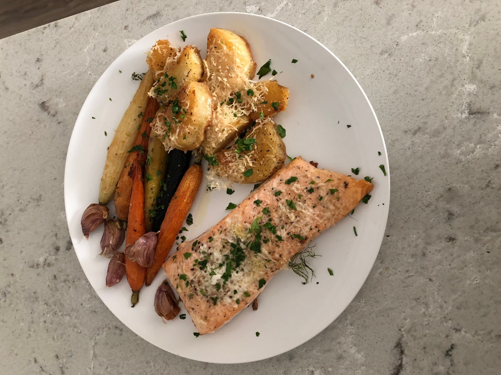

Rob's Baked Salmon and Roasted Vegetable Recipe
Ingredients:
- Salmon Filet
- Yellow Potatoes
- Carrots
- 3 Garlic Cloves, Finely Minced
- 1/2 Shallot, Finely Minced
- 6 Tablespoons of Olive Oil
- Salt and Pepper to Taste
- Italian Parsley (garnish)
- Grated Parmigiano-Reggiano Cheese (optional)
Steps:
- Start by peeling potatos and chopping into 1-2 inch cubes (choose a consistent size); preheat oven to 400 degrees F.
- At the same time, in a different pot, bring 6-8 cups of water to a boil.
- Boil potatoes for about 20 minutes or until fork tender (tip: add a teaspoon of baking soda for extra fluffy potatoes).
- Strain potatoes and set aside; bring 4 tablespoons of the oil to a medium-low heat in saute pan; set aside remaining 2 tablespoons of oil for salmon.
- Mix in shallots and garlic and saute until fragrant and color begins to turn light golden brown and lightly crispy, about 3-5 minutes.
- Turn off heat, strain garlic and shallot oil through a fine mesh strainer; set crispy garlic and shallots aside for garnish later.
- Gently toss potatoes in infused oil, season with salt and pepper and toss into oven for 1 hour, but pull potatoes out halfway through to turn.
- Prepare salmon - coat in remaining oil and season with salt and pepper
- When potatoes come out midway for their turn, add carrots and salmon to baking pan (optional: add grated cheese to potatoes or salmon).
- Bake for another 20-30 minutes or until salmon reaches an internal temperature of 130 degrees F.

Finished and plated dish.